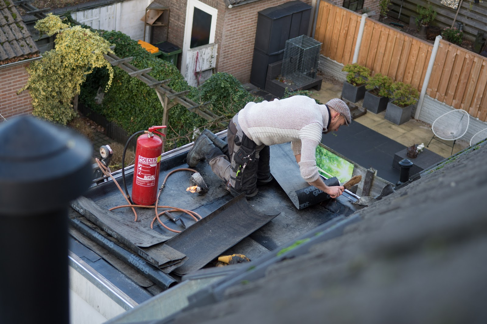

Platdak en isolatie, renovatie en onderhoud
Van onderhoud tot een volledig nieuwe opbouw met goede isolatie. Na renovatie of volledige dakvernieuwing ontvangt u altijd 10 jaar garantie.
“Willem en z'n team hebben het platte dak van mijn woning volledig gestript en helemaal opnieuw opgebouwd, met een flink pak isolatie, dakrand opgehoogd, nieuw zinkwerk, etc. Zijn echte vakmannen die weten wat ze doen en het eindresultaat ziet er piekfijn uit. Ook prettig dat ze eerlijke prijzen hanteren.”